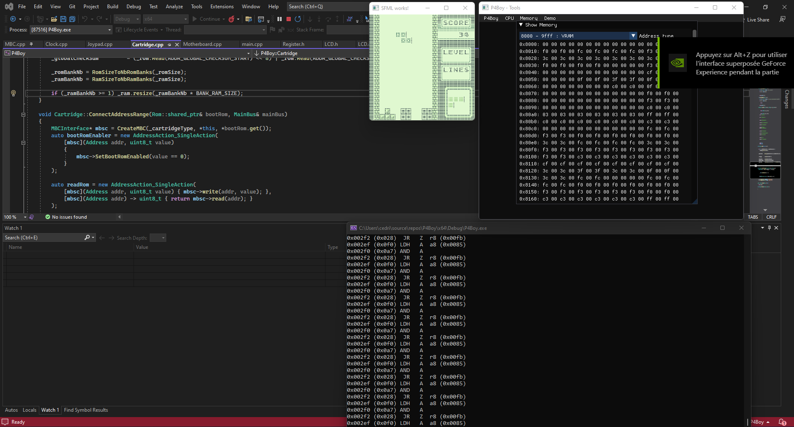
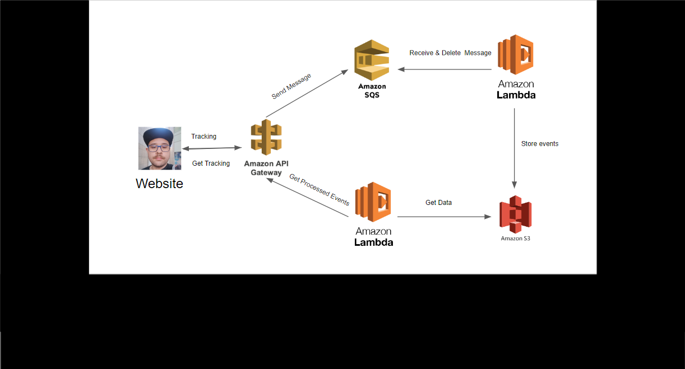

I'm a passionate programmer who loves designing automation pipelines. I can work as a DataOps Engineer (or data engineer as you prefer), DevOps Engineer, Test Automation Engineer, etc.
I can help you create and develop your automation strategy by providing my experience working in the gaming industry.
Projects

P4Boy: My implementation of a gameboy emulator
Written to better understand gameboy architecture. Programming language: C++

Activity tracking of this website.
A combinaison of AWS serverless services to track site activites. Using AWS Api Gateway, SQS, lambda & S3.